Complete Problem Set with Solutions - Undergraduate Level
Given the time series: x = [2, 4, 6, 8, 10]
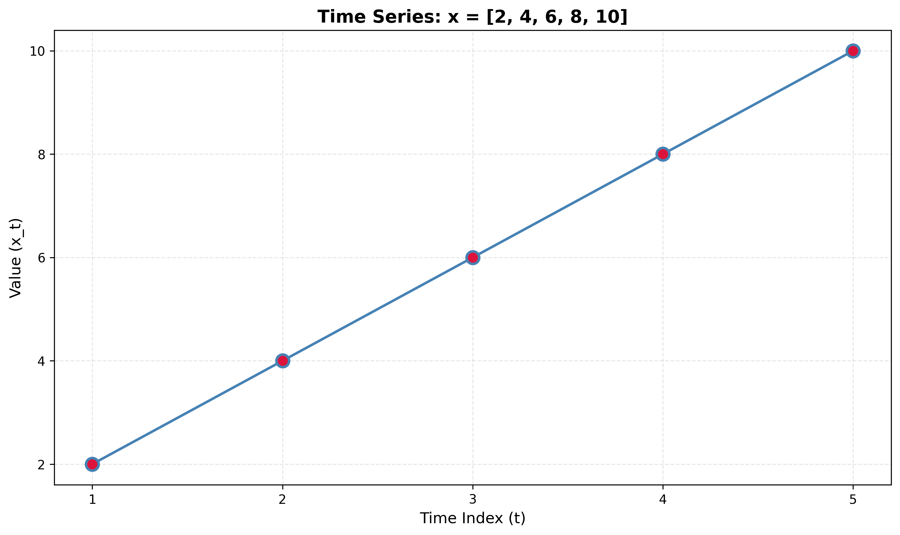
Compute:
Key
1. Sample mean: x̄ = 6
2. Sample variance: s² = 10
3. Autocovariance: γ(0) = 8, γ(1) = 3.2, γ(2) = -0.8
4. Autocorrelation: ρ(0) = 1.0, ρ(1) = 0.4, ρ(2) = -0.1
Explanation (how we get these numbers)
Mean: x̄ = (2 + 4 + 6 + 8 + 10) / 5 = 30 / 5 = 6.
Variance: Use s² = (1/(n−1)) Σ (xᵢ − x̄)². Deviations from mean: (2−6, 4−6, 6−6, 8−6, 10−6) = (−4, −2, 0, 2, 4). So s² = [(−4)² + (−2)² + 0² + 2² + 4²] / 4 = 40 / 4 = 10.
Autocovariance: Use γ(k) = (1/(n−k)) Σ (xᵢ − x̄)(xᵢ₊ₖ − x̄) with demeaned series. For k = 0: γ(0) = (1/5)[(−4)² + (−2)² + 0² + 2² + 4²] = 40/5 = 8 (same as variance up to divisor). For k = 1: pairs (x₁−x̄)(x₂−x̄), (x₂−x̄)(x₃−x̄), … → (−4)(−2)+(−2)(0)+(0)(2)+(2)(4) = 8+0+0+8 = 16, and n−k = 4, so γ(1) = 16/4 = 3.2. For k = 2: three pairs; sum = (−4)(0)+(−2)(2)+(0)(4) = −4, γ(2) = −4/3 ≈ −0.8.
Autocorrelation: ρ(k) = γ(k) / γ(0). So ρ(0) = 1, ρ(1) = 3.2/8 = 0.4, ρ(2) = −0.8/8 = −0.1.
Given the time series: x = [5, 5, 5, 5, 5]
Compute the autocovariance and autocorrelation. What happens when all values are identical?
Key
Sample mean x̄ = 5. Sample variance s² = 0. Autocovariance γ(0) = 0, γ(k) = 0 for k > 0. Autocorrelation is undefined (we cannot divide by γ(0) = 0).
Given the time series: x = [10, 8, 6, 4, 2]
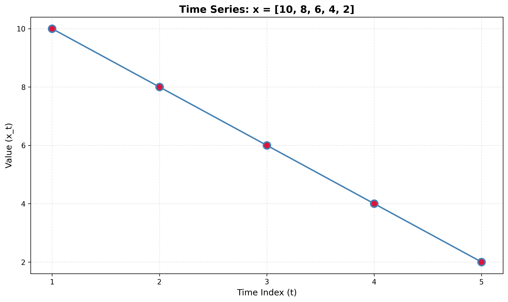
Compute the autocovariance γ(k) and autocorrelation ρ(k) for lags k = 0, 1, 2.
Key
Sample mean x̄ = 6. Sample variance s² = 10. γ(0) = 8, γ(1) = 3.2, γ(2) = −0.8. ρ(0) = 1.0, ρ(1) = 0.4, ρ(2) = −0.1.
Given the time series: x = [3, 7, 3, 7, 3]
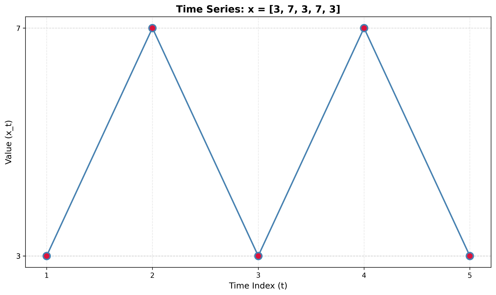
Compute the autocovariance and autocorrelation for lags k = 0, 1, 2, 3.
Key
Sample mean x̄ = 4.6. Sample variance s² = 4.8. γ(0) = 3.84, γ(1) = −3.072, γ(2) = 2.176, γ(3) = −1.536. ρ(0) = 1.0, ρ(1) = −0.8, ρ(2) ≈ 0.567, ρ(3) = −0.4.
Given the time series: x = [12, 15, 18, 12, 15, 18, 12]
Compute the autocovariance and autocorrelation for lags k = 0, 1, 2, 3.
Key
Sample mean x̄ ≈ 14.571. Sample variance s² ≈ 7.286. γ(0) ≈ 6.245, γ(1) ≈ −2.554, γ(2) ≈ −2.554, γ(3) ≈ 5.298. ρ(0) = 1.0, ρ(1) ≈ −0.409, ρ(2) ≈ −0.409, ρ(3) ≈ 0.848.
Given the time series: x = [5, 7, 9, 11, 13]
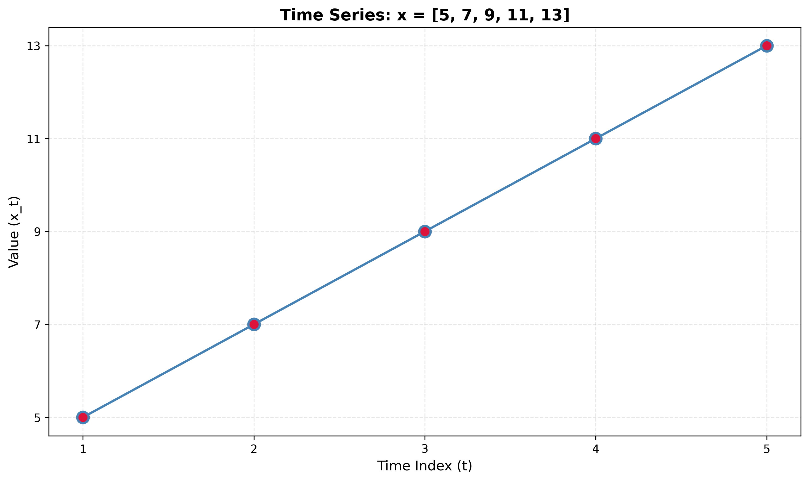
Key
Without mean removal: γ(0) = 89, γ(1) = 68, ρ(1) = 68/89 ≈ 0.764.
With mean removal: γ(0) = 8, γ(1) = 3.2, ρ(1) = 3.2/8 = 0.4.
Given the time series: x = [100, 102, 104, 106, 108]
Key
Without mean removal: ρ(1) ≈ 0.799. With mean removal: ρ(1) = 0.4.
Given the time series: x = [20, 20, 20, 25, 25, 25]
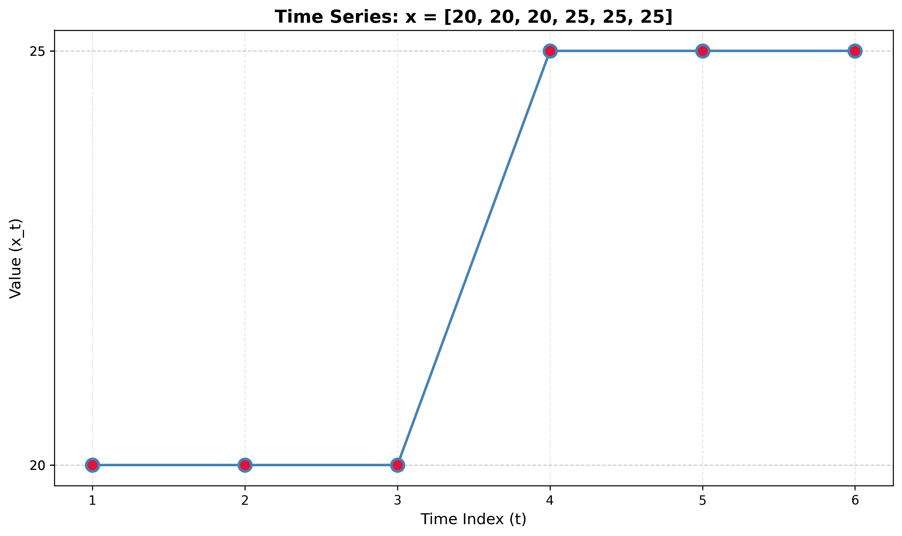
Compare the autocorrelation at lag 1 computed with and without mean removal. What does this tell you about the series?
Key
Without mean removal: ρ(1) ≈ 0.829. With mean removal: ρ(1) = 0.5.
Given the time series: x = [1, 3, 5, 1, 3, 5]
Compute autocorrelation at lag 2 with and without mean removal. Explain why the results differ.
Key
Without mean removal: ρ(2) ≈ 0.4 (positive). With mean removal: ρ(2) = −0.5 (negative).
Given the time series: x = [10, 12, 14, 10, 12, 14, 10]
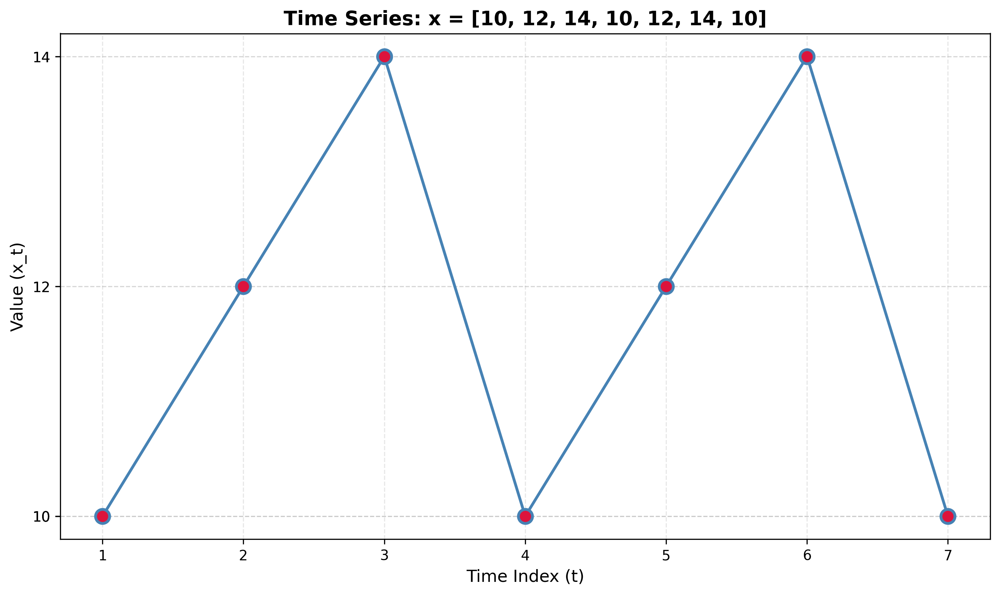
Key
Without mean removal: ρ(3) ≈ 0.551. With mean removal: ρ(3) ≈ 0.729.
A time series has an ACF plot where ρ(0) = 1 and ρ(k) ≈ 0 for all k > 0, with values randomly scattered around zero within the confidence bands.
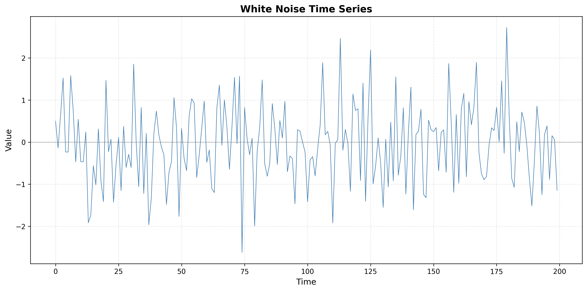
Key
1. Process type: White noise.
2. Characteristics: No serial correlation (ρ(k) ≈ 0 for k > 0); constant mean and variance (stationary); no predictable pattern; observations uncorrelated across time; used as a baseline for model diagnostics (e.g. residuals should look like white noise).
3. Illustration: The code below generates white noise and plots the series and its ACF. You should see ρ(0) = 1 and ρ(k) near zero within the confidence bands.
Python code (runnable)
import numpy as np
import matplotlib.pyplot as plt
from statsmodels.tsa.stattools import acf
from statsmodels.graphics.tsaplots import plot_acf
# Set random seed for reproducibility
np.random.seed(42)
# Generate white noise time series
n = 200
white_noise = np.random.normal(loc=0, scale=1, size=n)
# Create time index
time = np.arange(n)
# Plot the time series
plt.figure(figsize=(14, 5))
plt.subplot(1, 2, 1)
plt.plot(time, white_noise, linewidth=0.8, color='steelblue')
plt.title('White Noise Time Series', fontsize=14, fontweight='bold')
plt.xlabel('Time', fontsize=12)
plt.ylabel('Value', fontsize=12)
plt.grid(True, alpha=0.3)
# Compute and plot ACF
plt.subplot(1, 2, 2)
plot_acf(white_noise, lags=40, alpha=0.05, ax=plt.gca())
plt.title('ACF Plot: White Noise', fontsize=14, fontweight='bold')
plt.xlabel('Lag', fontsize=12)
plt.ylabel('Autocorrelation', fontsize=12)
plt.grid(True, alpha=0.3)
plt.tight_layout()
plt.show()A time series has an ACF plot showing ρ(k) that decays very slowly, remaining positive and significant even at large lags (e.g., ρ(20) > 0.5).
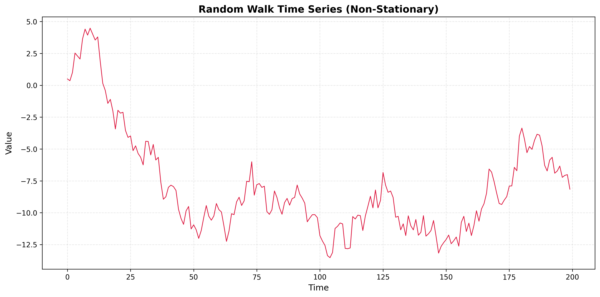
Key
1. Pattern: Trend or non-stationary process. Slow decay of ρ(k) with no cutoff suggests long memory, usually from a deterministic or stochastic trend.
2. Non-stationarity: Likely a deterministic trend (e.g. linear), a random walk, or a unit-root process. First differencing is often needed to obtain a stationary series.
3. Illustration: The code below shows two examples: (i) linear trend + noise and (ii) random walk. Both produce ACFs that decay slowly and stay positive at large lags.
import numpy as np
import matplotlib.pyplot as plt
from statsmodels.graphics.tsaplots import plot_acf
n = 200
np.random.seed(42)
# Option 1: Linear trend + noise
trend_series = 0.05 * np.arange(n) + np.random.normal(0, 1, n)
# Option 2: Random walk
random_walk = np.cumsum(np.random.normal(0, 1, n))
fig, axes = plt.subplots(2, 2, figsize=(12, 8))
axes[0,0].plot(trend_series); axes[0,0].set_title('Trend + noise')
plot_acf(trend_series, lags=40, ax=axes[0,1]); axes[0,1].set_title('ACF')
axes[1,0].plot(random_walk); axes[1,0].set_title('Random walk')
plot_acf(random_walk, lags=40, ax=axes[1,1]); axes[1,1].set_title('ACF')
plt.tight_layout(); plt.show()A time series has an ACF plot showing oscillatory (sinusoidal) behavior, with autocorrelations alternating between positive and negative values in a periodic pattern.
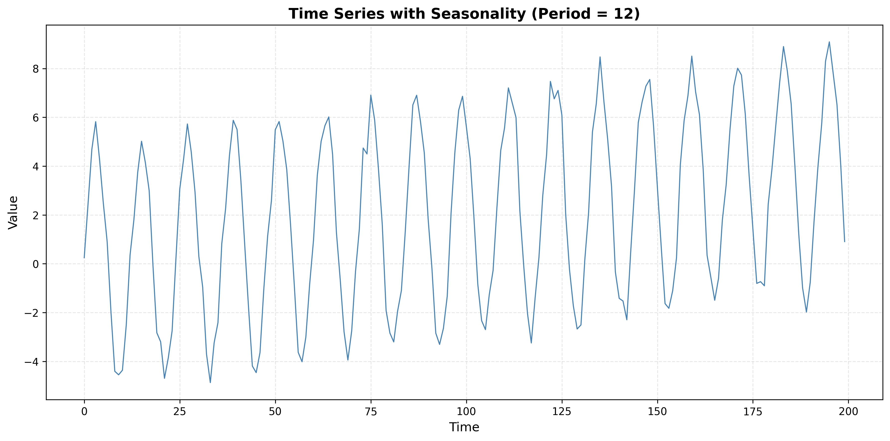
Key
1. Pattern: Seasonality or cyclical behavior. Oscillating ACF (positive/negative by lag) indicates a periodic component in the series.
2. Type: Deterministic seasonality, a cyclical (e.g. sinusoidal) component, or a seasonal AR/MA structure. The period of the oscillation in the ACF matches the seasonal period.
3. Illustration: The code below builds a series with a sinusoidal component (period 12) plus trend and noise. The ACF will show oscillatory (sinusoidal) decay.
import numpy as np
import matplotlib.pyplot as plt
from statsmodels.graphics.tsaplots import plot_acf
n = 200
np.random.seed(42)
t = np.arange(n)
seasonal = 5 * np.sin(2 * np.pi * t / 12)
series = 0.02 * t + seasonal + np.random.normal(0, 0.5, n)
fig, ax = plt.subplots(1, 2, figsize=(12, 4))
ax[0].plot(series); ax[0].set_title('Seasonal series')
plot_acf(series, lags=50, ax=ax[1]); ax[1].set_title('ACF')
plt.tight_layout(); plt.show()A time series has an ACF plot where ρ(k) shows a sharp cutoff after lag q = 2, with ρ(1) and ρ(2) being significant, but ρ(k) ≈ 0 for all k > 2.
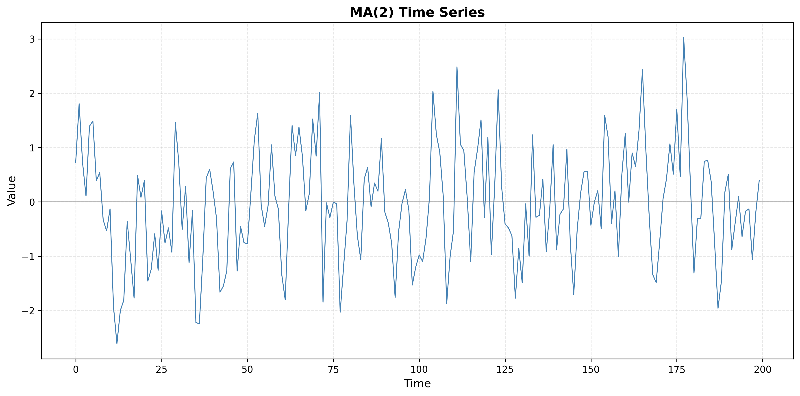
Key
1. Process type: Moving Average of order 2, MA(2). ACF that is significant at lags 1 and 2 and then cuts off to (approximately) zero is the hallmark of an MA(q) process with q = 2.
2. Model order: MA(2) or ARIMA(0, 0, 2).
3. Illustration: The code below simulates an MA(2) process and plots the series and ACF. You should see ρ(1) and ρ(2) significant and ρ(k) ≈ 0 for k > 2.
from statsmodels.tsa.arima_process import ArmaProcess
import matplotlib.pyplot as plt
from statsmodels.graphics.tsaplots import plot_acf
ar_coeffs, ma_coeffs = np.array([1]), np.array([1, 0.5, 0.3]) # MA(2)
ma2_series = ArmaProcess(ar_coeffs, ma_coeffs).generate_sample(nsample=200)
fig, ax = plt.subplots(1, 2, figsize=(12, 4))
ax[0].plot(ma2_series); ax[0].set_title('MA(2) series')
plot_acf(ma2_series, lags=20, ax=ax[1]); ax[1].set_title('ACF')
plt.tight_layout(); plt.show()A time series has an ACF plot showing exponential decay: ρ(k) starts high and decays gradually, remaining positive but decreasing, with no sharp cutoff.
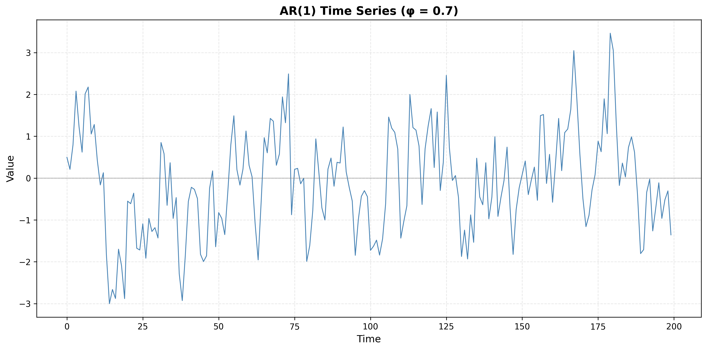
Key
1. Process type: Autoregressive (AR) process. Gradual (exponential) decay of ρ(k) with no sharp cutoff is typical of AR processes.
2. Difference from MA: AR: ACF decays gradually (exponential or damped sinusoid). MA: ACF cuts off sharply after lag q (ρ(k) ≈ 0 for k > q). So “exponential decay, no cutoff” ⇒ AR; “significant for a few lags then zero” ⇒ MA.
3. Illustration: The code below simulates an AR(1) process (φ = 0.7). The ACF should decay roughly as ρ(k) ∝ 0.7^k.
from statsmodels.tsa.arima_process import ArmaProcess
import matplotlib.pyplot as plt
from statsmodels.graphics.tsaplots import plot_acf
ar_coeffs, ma_coeffs = np.array([1, -0.7]), np.array([1]) # AR(1)
ar1_series = ArmaProcess(ar_coeffs, ma_coeffs).generate_sample(nsample=200)
fig, ax = plt.subplots(1, 2, figsize=(12, 4))
ax[0].plot(ar1_series); ax[0].set_title('AR(1) series')
plot_acf(ar1_series, lags=20, ax=ax[1]); ax[1].set_title('ACF (exponential decay)')
plt.tight_layout(); plt.show()Consider a heart rate time series where the ACF shows:
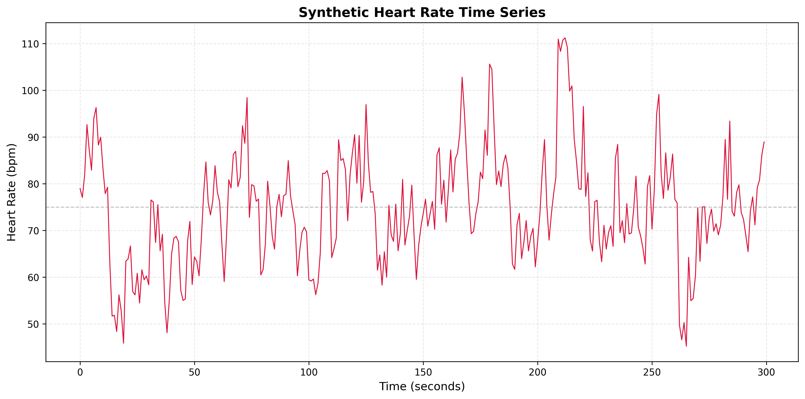
Key
1. Memory length: Short memory—ACF decays to near zero by lag 5, so the process “forgets” after about 5 steps.
2. Model order: AR(1) or ARIMA(1, 0, 0) is appropriate (exponential decay with no sharp cutoff ⇒ AR(1)).
3. Deep learning: No. The ACF is simple (exponential decay, short memory), so classical AR/ARIMA is sufficient. Deep learning is more useful when the dependence is long, nonlinear, or high-dimensional.
4. Illustration: Simulate an AR(1) with φ ≈ 0.8 to get ρ(1) ≈ 0.8 and rapid decay; plot the series and ACF to match the described pattern.
Consider a blood pressure time series where the ACF shows:
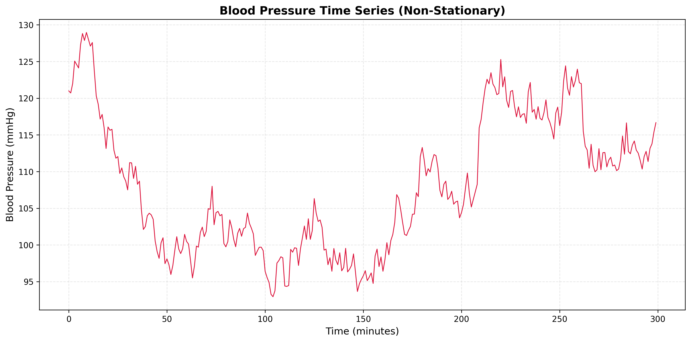
Key
1. Process: Non-stationary—likely a random walk or unit-root process. Very slow ACF decay with no cutoff is typical of integrated (I) series.
2. Preprocessing: First-order differencing is needed. The differenced series should have a fast-decaying ACF (stationary).
3. Model: For the original series, use ARIMA(1, 1, 0): d = 1 from differencing; the differenced series can be modeled as AR(1).
Consider an EEG-like signal where the ACF shows:
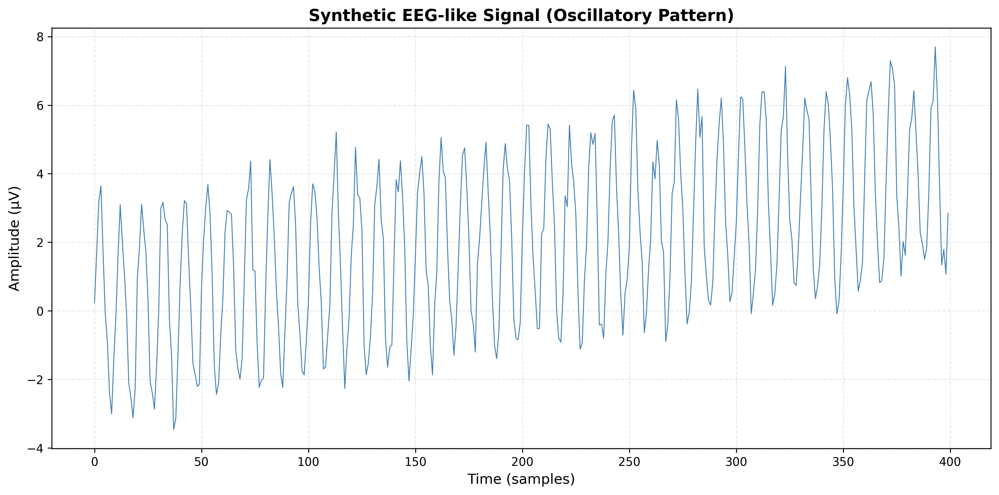
Key
1. Signal: Strong periodic component with period about 10 (e.g. alpha rhythm in EEG). ACF peaks at 10, 20, 30 confirm the period.
2. Seasonality: Deterministic or stochastic seasonality with period 10. The decaying amplitude of ACF oscillations is common when there is both seasonal and non-seasonal dynamics.
3. SARIMA: Yes. A SARIMA model is appropriate, e.g. SARIMA(1, 0, 1)(1, 0, 1)₁₀, where the seasonal order (1, 0, 1)₁₀ captures the period-10 component.
Consider a respiratory rate time series where the ACF shows:
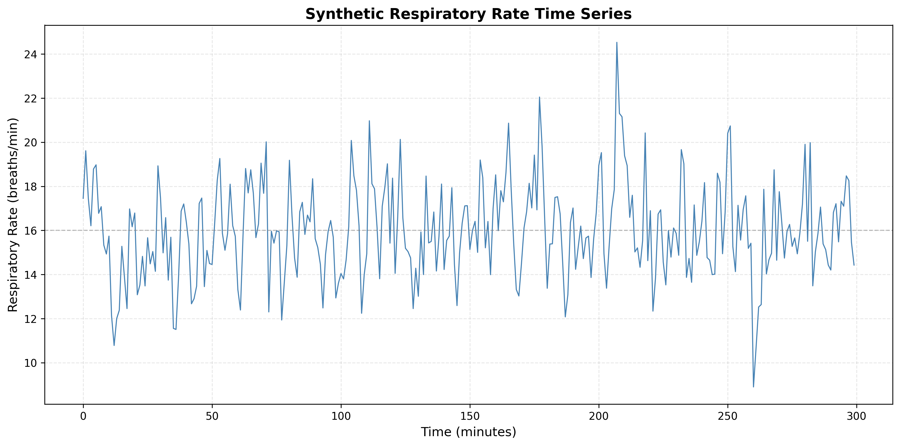
Key
1. Process: MA(2)—ACF cuts off after lag 2, so a moving average of order 2 fits.
2. Memory length: 2 time steps; correlation is only with the last two lags.
3. Model order: MA(2) or ARIMA(0, 0, 2).
Consider a body temperature time series where the ACF shows:
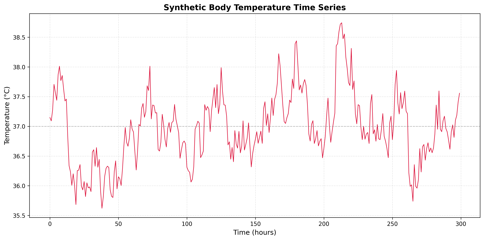
Key
1. Process: AR(1) with a high coefficient (φ close to 1). Exponential decay with ρ(1) ≈ 0.9 and all ρ(k) positive is classic AR(1).
2. Memory length: Effective memory ~10–15 steps—the lag where ρ(k) drops below about 0.2. For AR(1), ρ(k) = φ^k, so φ = 0.9 gives ρ(10) ≈ 0.35 and ρ(15) ≈ 0.21.
3. Deep learning: Usually not necessary. A linear AR(1) model fits this pattern well. Consider deep learning only if you have evidence of nonlinearity or very long-range dependence.
This problem set covers:
Each solution includes a Key (short answer or numerical result) and an Explanation (formulas used, step-by-step derivation where helpful, and interpretation). Python code is provided where useful for illustration. Suitable for undergraduate students.